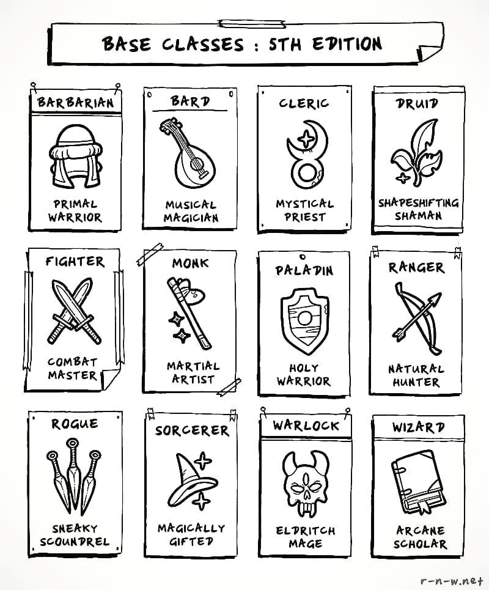
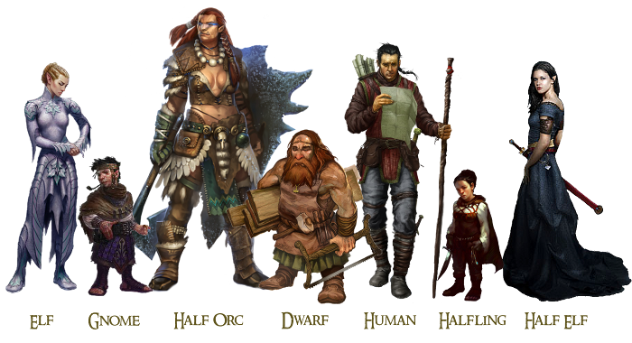

Classes and Races of Dungeons and Dragons
Here are some of the classes you can choose from:
- Barbarian - A fierce warrior of primitive background who can enter a battle at rage.
- Bard - An inspiring magician whose power echoes the music of creation.
- Cleric - A priestly champion who wields divine magic in service of a higher power.
- Druid - A priest of the Old Faith, wielding the powers of nature and adopting animial forms.
- Fighter - A master of martial combat, skilled with a variety of weapons and armor.
- Monk - A master of martial arts, harnessing the power of the body in pursuit of physical and spiritual perfection.
- Paladin - A holy warrior bound to a sacred oath.
- Ranger - A warrior who combats threats on the edges of civilazation.
- Rogue - A scoundral who uses stealth and trickery to overcome obstacles and enemies.
- Sorcerer - A spellcaster who draws on inherent magic from a gift or bloodline.
- Warlock - A wielder of magic that is derived from a bargain with an extraplanar entity.
- Wizard - A scholarly magic-user capable of manipulating the structures of reality.

Here are some of the races you can choose from:
- Dragonborn - Dragonborn look very much like dragons standing erect in humanoid form, though they lack wings or a tail.
- Dwarf - Bold and hardy, dwarvevs are known as skilled warriors, miners, and workers of stone and metal.
- Elf - Elves are magical people of otherworldly grace, living in the world but not entirely part of it.
- Gnome - A gnome's energy and enthusiasm for living shines through every inch of his or her tiny body.
- Half-elf - Half-elves combine what some say are the best qualities of their elf and human parents.
- Halfling - The diminutive halflings survive in a world full of larger creatures by avoiding notice or, barring that, avoiding offense.
- Half-orc - Half-orcs' grayish pigmentation, sloping foreheads, jutting jaws, prominent teeth, and towering builds make their orcish heritage plain for all to see.
- Human - Humans are the most adaptable and ambitious people among the common race. Whatever drives them, humans are the innovators, the achievers, and the poineers of the worlds.
- Tiefling - To be greeted with stares and whispers, to suffer violence and insult on the street, to see mistrust and fear in every eye: this is the lot of the tiefling.
- There are many more, this is just the basic ones that are in the player's handbook. I suggest looking on the website for even more races.
